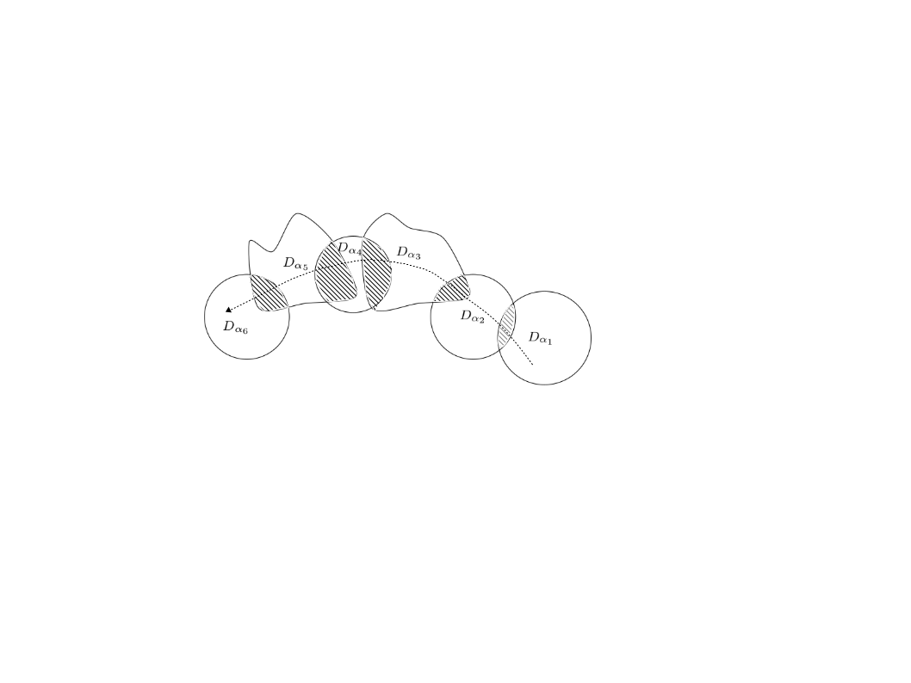
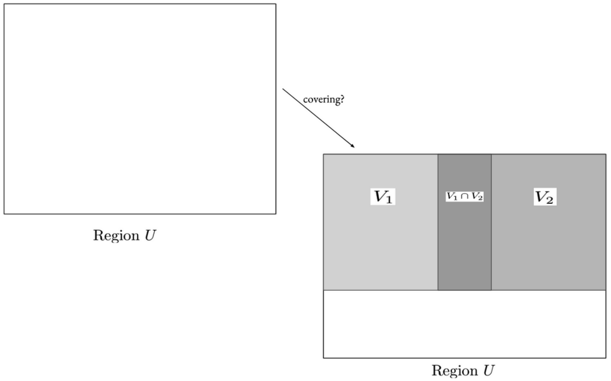
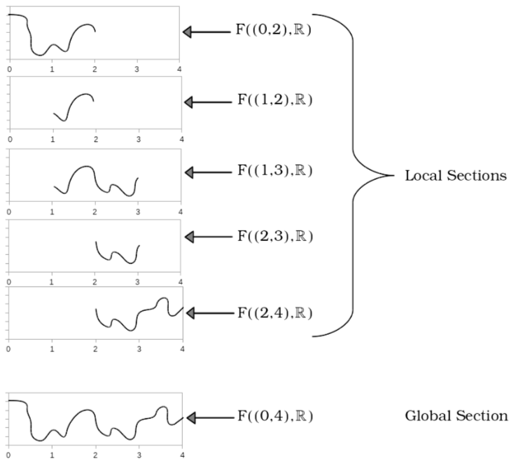
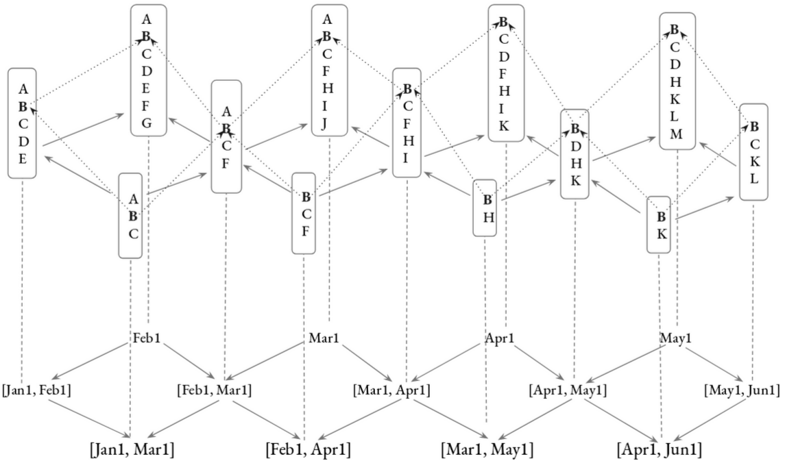
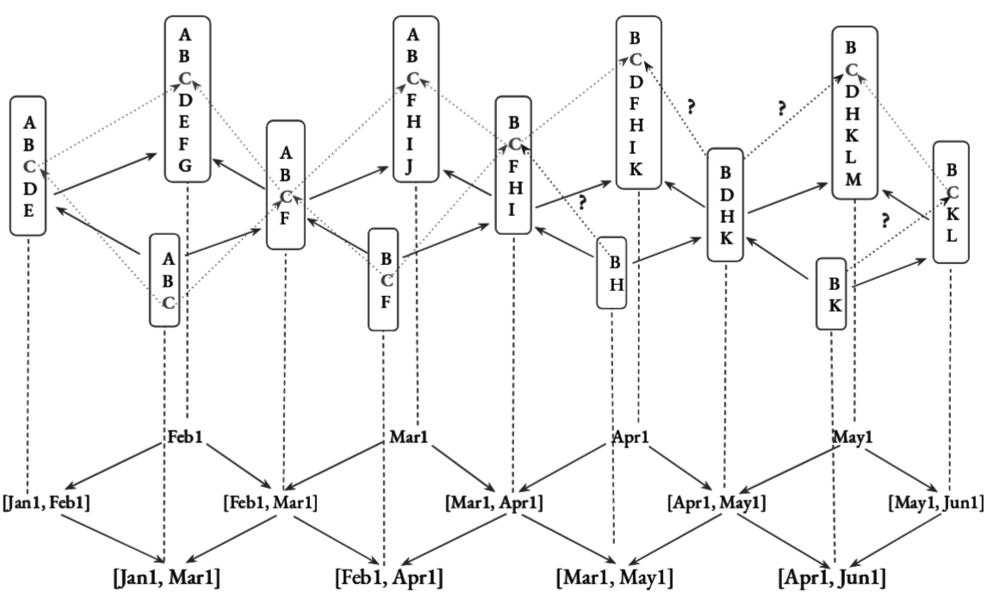
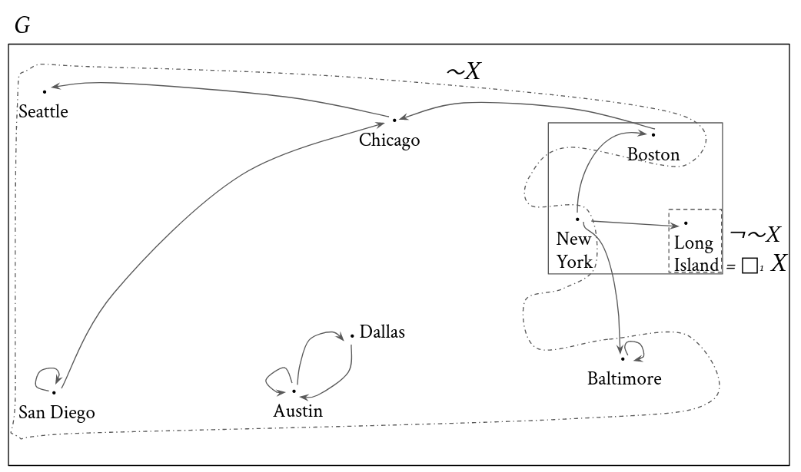
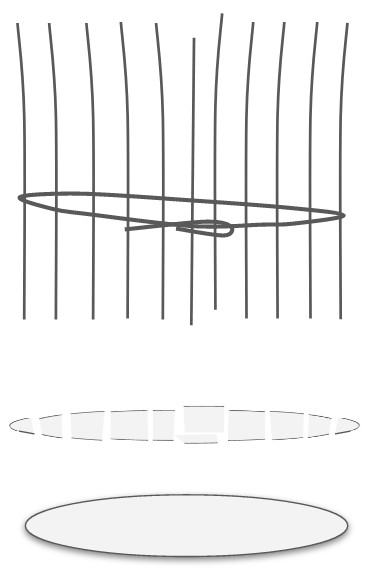
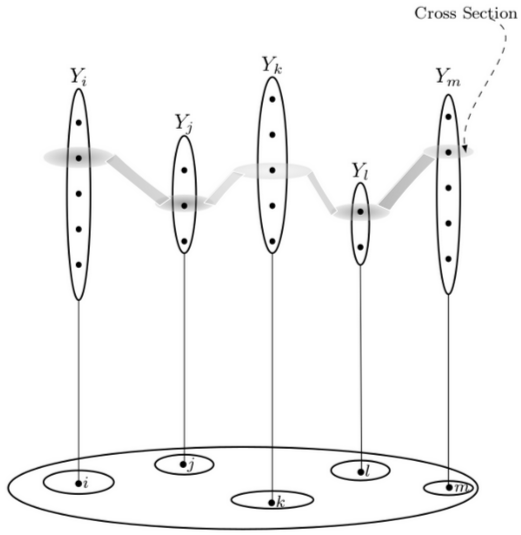
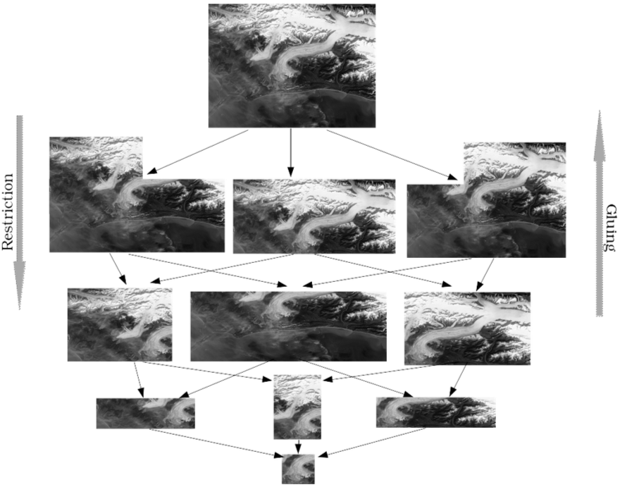
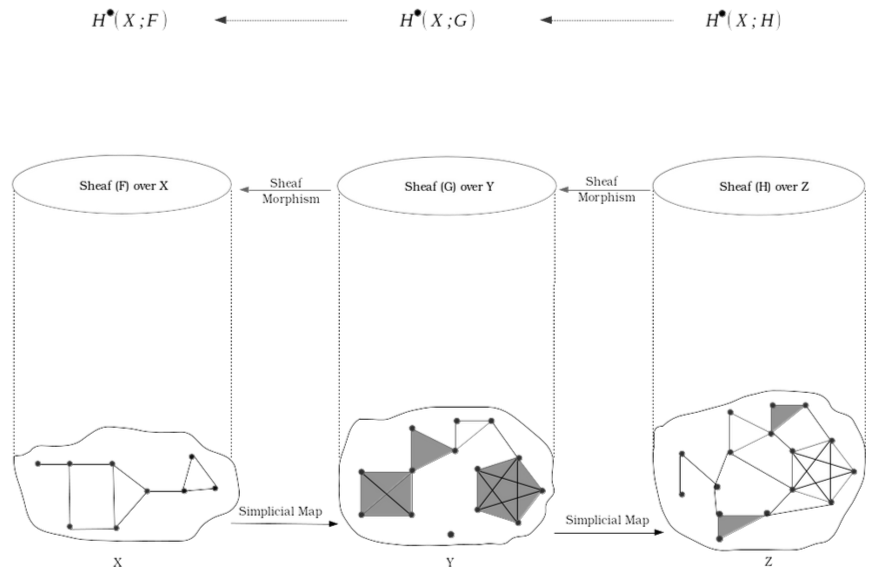

Schemes Self-Study · Lesson 0000 · The Big Picture
Sheaf theory is rumored to be the most abstract room in mathematics. The rumor was started by people who write \(\mathcal F(U)\) before they draw a picture. The truth is older and far more physical: a sheaf is the exact bookkeeping of how local data does — or stubbornly does not — assemble into global data. You have been quarreling with one since the first time you tried to take a square root.
Take \(\sqrt{z}\) on the punctured plane \(\mathbb C^\times=\mathbb C\setminus\{0\}\). On any small disc you can choose an honest, single-valued branch — a genuine function with \((\sqrt z)^2=z\). These local choices are real, rigorous objects. Yet walk once around the origin and your branch comes back negated: \(\sqrt z \mapsto -\sqrt z\). There is no continuous square root on all of \(\mathbb C^\times\). The local solutions are flawless; the obstruction to fusing them is the monodromy around \(0\).

This is the local-to-global principle, and the sheaf is its ledger. Riemann's entire theory of surfaces grew from it. Once you have the eye for it, you see it everywhere — and a sheaf gives you two superpowers at once:
Don't memorize the axiom — ask what it is for. It is for making one little word, locally, completely honest. Here is the whole machine in three moves.
A presheaf is a filing cabinet: it can only look down. It becomes a sheaf when it can also build up — when local truths that match can be stitched into one global truth.
Two words hide in that single diagram, and you need both:
| Clause | What it buys you | Name |
|---|---|---|
| at most one glue | a section is pinned down by its restrictions — match the arrows | separatedness3 |
| at least one glue | matching local data actually patches together | gluing / existence |

Here is the picture to keep forever — the prototype every later abstraction must answer to: pieces of a curve drawn over little intervals, agreeing where they meet, patched into one curve over the whole.

Picture the Earth. To each region attach its weather — the temperature at every point, the wind, the pressure. Play the three moves. Restrict: the weather over Asia, looked at only over Japan, is just Japan's weather. Match: your map and mine agree on the strip where they overlap. Glue: they fuse into one seamless global map. Temperature is a field — a number at each point — and fields are the soul of a sheaf.4 A global section here is exactly the meteorologist's dream: one consistent weather map of the whole planet.
Now try the same trick with wealth, and watch it fail — beautifully. The number you actually want is the total wealth in a region. But a total is a sum, and a sum refuses both superpowers. It can't restrict: knowing the world holds \(400\) trillion tells you nothing about your town. And it can't glue; it can only be added up. The arrows literally point the other way — from the small region into the big one — and on disjoint regions the totals just sum. That backwards, additive bookkeeping is not a sheaf at all; it is its categorical mirror, a cosheaf (a measure).5
| Quantity | Sheaf — e.g. weather | Cosheaf — e.g. wealth |
|---|---|---|
| lives… | at every point (intensive) | as a lump total (extensive) |
| arrows… | restrict: big → small | extend: small → big |
| functor… | contravariant | covariant |
| assembles by… | gluing on overlaps | adding up pieces |
Fields glue; sums pile. The instant you feel that difference in your gut, you understand what a sheaf is by feeling the precise edge of what it isn't. (You were right: wealth is no sheaf — and the reason is a clean structural theorem, not an accident.)
A warehouse logs which products sit in stock through the year. To each time-interval, attach the set of products present the whole time; restriction is honest (present over a long stretch ⇒ present over a shorter one). Product B is there all year — it threads every interval and assembles into a clean global section.

Now product C: present January–April, present May–June, but gone for two weeks in between. So C is a perfectly good local section over the left stretch and another over the right — and there is no global section "C, all year," because C genuinely vanishes in the gap.

Strip away space entirely. Take a bare graph — dots and lines — and to each subgraph attach its proper colorings (no edge monochrome). Two colorings match when they agree on shared vertices; they glue into one global coloring exactly when every shared vertex agrees. No distance, no topology, and the sheaf logic is identical. A global section is a consistent coloring of the whole — the engine behind Sudoku and map-coloring.
Or keep the network but ask a different question. On a real map of routes, "which towns can I possibly reach, which must I necessarily pass" are themselves computed by sheaf-style operators spreading along the edges — local reachability knitted into global reachability.

And the same idea governs whole jurisdictions: attach to each country the laws respected there; glue the compatible ones across the map, and the global sections are the laws respected by everyone on Earth — the handful of rules every society, in its own words, keeps. The sheaf turns "local rules" into "universal values" and hands you the second for free.
Look at a field of wheat tied into a bundle, or sediment layered over bedrock. Over each patch of ground, stalks rise; gather one choice from each and you hold a single clean slice across the top. That is the literal picture, and the mathematicians stole the farmers' word for it.


Make this precise and you get a bundle: a space \(Y\) with a projection \(p\colon Y\to X\), one fiber \(p^{-1}(x)\) sitting over each point \(x\). A section over \(U\) is a continuous \(s\colon U\to Y\) with \(p\circ s=\mathrm{id}\) — a choice in each fiber. The sections of a bundle always form a sheaf (they restrict; compatible ones glue). The deep fact runs the other way too:

Now make every fiber a vector space. The glued-together object is a vector bundle — the most geometric thing in the world, and you can build one with paper. Take a strip, give it a half-twist, tape the ends: a Möbius band, a line bundle over the circle. Glue the strip straight instead and you get a plain cylinder. Same fibers, different gluing — and that difference is everything.
Ask the sheaf question — what are the global sections? A section is a continuous choice of one vector in every fiber. On the cylinder: easy, "height \(1\) all the way around," never zero. On the Möbius band, every global section must hit zero somewhere — the twist won't let you choose a nonzero vector consistently around the loop without it flipping sign and passing through nothing.
That forced zero is detected by the same villain as the logarithm and the warehouse: a cohomology class. And now the bridge you wanted becomes literal — the same object, read in two languages:
| The geometer sees… | The algebraist sees… |
|---|---|
| a vector bundle — a twisted space \(E\to X\), fibers you can picture | its sheaf of sections \(\mathcal E\), an \(\mathcal O_X\)-module |
| locally it looks like \(U\times k^n\) (trivial) | locally \(\mathcal E\cong\mathcal O_X^{\,\oplus n}\) — finite locally free6 |
| the bundle is twisted (Möbius) | the module is locally free but not globally free |
| the tangent bundle, line bundles, the Möbius band | finitely generated projective modules |
These two columns are the same object. In topology or differential geometry that identity has a famous name — the Serre–Swan theorem: over a compact (resp. paracompact) base, vector bundles correspond to finitely generated projective modules over the ring of functions.7 In algebraic geometry the dictionary needs no such hypothesis — there, "vector bundle" simply means "finite locally free \(\mathcal O_X\)-module." The structure sheaf \(\mathcal O_X\) itself is the sections of the trivial line bundle; \(\mathcal O_X^{\,\oplus n}\) is the trivial rank-\(n\) bundle. And the fact your commutative-algebra gut already knows — finitely generated projective modules are exactly the locally free ones8 — reads, geometrically, as the single sentence: projective modules are vector bundles. Algebra you can see; geometry you can compute.
Here is the rigor that makes the playground cohere. Every "can't glue" in this lesson is the same obstruction, living in the first cohomology of a sheaf. Local solvability minus global solvability is a class in \(H^1\).

Here is the secret that makes this your lesson and not a pop-science detour. Weather over the Earth, continuous functions over a space, and rings over \(\operatorname{Spec}R\) are the same shape. Swap "region of Earth" for the basic open \(D(f)\), swap "weather field" for the localization \(R_f\), and the three moves become pure commutative algebra:
| Sheaf idea (this lesson) | On \(\operatorname{Spec}R\) (your lessons) | Tag |
|---|---|---|
| a region \(U\) | a basic open \(D(f)\) | 01HS |
| the field over \(U\) | \(\mathcal O\big(D(f)\big)=R_f\) | 01HU |
| RESTRICT (zoom in) | localize \(R\to R_f\) | 006E |
| a cover \(U=\bigcup U_i\) | \(D(f)=\bigcup D(g_i)\iff (g_i)\) generate the unit ideal in \(R_f\) | 01HS |
| GLUE on overlaps | the localization exact sequence (sheaf axiom) | 006T |
| data shrunk to a point (germ/stalk) | the stalk \(\mathcal O_{X,\mathfrak p}=R_{\mathfrak p}\) | 01HV |
| a module over the field | \(\widetilde M\), the quasi-coherent sheaf of an \(R\)-module \(M\) | 01BE |
The structure sheaf \(\mathcal O\) you are building toward is literally the weather of a ring: on each basic open it reads off the localization \(R_f\), and the sheaf axiom is the localization exact sequence in disguise. You don't even have to check it on every open set — only on the basic opens \(D(f)\), then extend off the basis.10 A scheme like \(\operatorname{Spec}R\) may be impossible to picture, yet you can carry every bundle intuition — tangent spaces, twisting, "every section vanishes" — straight across this dictionary and do it all in pure ring theory. A sheaf is the translator that makes a geometric object speak algebra.